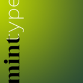
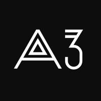

Автор — Андрій Константинов, Mint Type. Впровадили Агенти змін разом з Укравтодором та ДерждорНДІ у 2020 році під час створення проекту нової дорожньої навігації.
Ліцензія CC BY-ND 4.0 — при використанні обов’язково вказувати авторів, можна копіювати, розповсюджувати та використовувати у комерційних цілях, заборонено модифікувати, продавати та обмежувати інших у використанні цього шрифту.